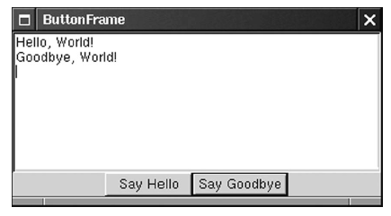

wxBoxSizer* button_sizer = new wxBoxSizer(wxHORIZONTAL); button_sizer->Add(hello_button); button_sizer->Add(goodbye_button);
wxBoxSizer* frame_sizer = new wxBoxSizer(wxVERTICAL); frame_sizer->Add(text, 1, wxGROW); frame_sizer->Add(button_sizer, 0, wxALIGN_CENTER);
